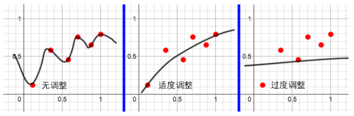

您可以在姿势编辑器中为蒙皮角色创建姿势空间变形，然后将其另存为融合变形。为了驱动融合变形权重，姿势编辑器提供了一个可读取关节变换的姿势插值系统。
有关使用姿势编辑器的详细信息，请参见创建姿势空间变形。
- 在“雕刻”(Sculpting)工具架中，单击 图标。
- 在主菜单栏中：“
- 在“建模”(Modeling)、“绑定”(Rigging)和“动画”(Animation)菜单集中：“
- 在面板中：“
若要打开姿势编辑器，请执行以下操作：
有关姿势编辑器每个部分的信息，请参见此图下面的表：
|
调整“姿势编辑器”(Pose Editor)布局 |
可以调整“Pose”(面板)的布局：
|
|
1 - 菜单命令 |
有关姿势编辑器中所有菜单命令的列表，请参见下文。 |
|
2 - 创建姿势插值器(Create Pose Interpolator) |
选择要跟踪姿势插值的蒙皮角色关节，然后单击此图标创建姿势插值器 (PI) 节点。 还可以在姿势编辑器的空白区域中单击鼠标右键，然后选择“创建姿势插值器”(Create Pose Interpolator)。 如果要在创建姿势插值器节点之前设置选项，请选择“ > |
|
3 - 姿势插值器(Pose Interpolators)面板 |
列出您在角色的蒙皮网格上为关节创建的姿势插值器节点。 选择姿势插值器节点，可在右侧的“姿势”(Poses)面板中显示为此节点创建的所有姿势。 默认情况下，PI 节点名称是带有“_poseInterpolator”后缀的关节名称。在姿势插值器节点上单击鼠标右键并选择“重命名”(Rename)，可为其提供新名称。 将姿势插值器节点拖放到树中，可更改其顺序。还可以将一个姿势插值器节点拖放到另一个姿势插值器节点上，对其进行分组；或者，将姿势插值器节点拖动到空白区域中，将其从组中移除。 在姿势插值器节点名称上单击鼠标右键，可打开包含下列命令的上下文菜单：“选择驱动者”(Select Drivers)、“显示高级设置”(Show Advanced Settings)、“显示驱动者设置”(Show Driver Settings)、“属性”(Attributes)（打开姿势插值器的属性编辑器）、“导出”(Export)、“分组”(Group)、“镜像”(Mirror)、“重命名”(Rename)和“删除”(Delete)。 组(Group) 单击此面板中的“删除”(Delete) |
|
4 - 添加姿势(Add Pose) |
将带有关联姿势插值器节点的关节旋转和/或移动到要跟踪的所需姿势。然后，选择姿势插值器节点并单击此按钮，以使用自动设置创建姿势。 姿势具有您为使蒙皮网格变形而创建的关联修正融合变形。顶点与蒙皮在原始状态下的偏移保存在每个姿势中。
新姿势的权重设置为 1，且其“编辑”(Edit)按钮会自动激活（变为红色），以便您能够立即使蒙皮网格变形，从而形成此修正形状。 也可以选择“ > |
|
5 - 姿势(Pose)面板/姿势名称(Pose Name) |
为选定姿势插值器 (PI) 节点创建的姿势将显示在此面板中。 默认情况下，姿势名称将是 driverName_rx_ry_rz，其中，driverName 是关节的名称，rx/ry/rz 是姿势的旋转值。在姿势名称上单击鼠标右键并选择“重命名”(Rename)，可为其提供新名称。 在姿势名称上单击鼠标右键，可打开包含下列命令的上下文菜单：“转到姿势”(Go to Pose)、“更新姿势”(Update Pose)、“自动调整高斯衰减”(Auto-adjust Gaussian Falloff)（如果在“高级设置”(Advanced Settings)中选择“高斯”(Gaussian)作为“插值”(Interpolation)）、“编辑”(Edit)、“复制姿势形状”(Duplicate Pose Shape)、“更新姿势形状”(Update Pose Shape)、“属性”(Attributes)（打开姿势的属性编辑器）、“显示高级设置”(Show Advanced Settings)、“导出”(Export)、“镜像”(Mirror)、“重命名”(Rename)和“删除”(Delete)。 单击此面板中的“删除”(Delete) |
|
6 - 活动/非活动 |
单击圆，可切换激活姿势对角色蒙皮网格的效果。此外，您还可以选择多个项目，然后单击其中一个项目对应的圆，以切换所有项目的活动状态。 姿势未处于活动状态时，权重和编辑均会禁用。 |
|
7 - 类型(Type) |
姿势类型：“摆动和扭曲”(Swing and Twist)、“仅摆动”(Swing Only)或“仅扭曲”(Twist Only)。请参见添加姿势选项(Add Pose Options)。 |
|
8 - 权重(Weight) |
此姿势对蒙皮网格的影响。 拖动滑块可将该姿势的权重（影响）设置为一个介于 0（没有影响）和 1（100% 影响）之间的值，或者在“权重”(Weight)文本框中输入一个值。 旋转关节时，姿势的权重值更新范围为 0 到 1，具体取决于关节距存储的姿势有多近。 |
|
9 - 编辑(Edit) |
单击“编辑”(Edit)按钮，或者在姿势名称上单击鼠标右键，然后选择“编辑”(Edit)进入此姿势的编辑模式。 使用雕刻工具修改蒙皮网格，或者选择蒙皮网格上的组件并使用移动、旋转和缩放工具对其进行修改。完成后，再次单击“编辑”(Edit)按钮，以保存对此姿势所做的更改并退出编辑模式。 每次只能进入一个姿势的编辑模式，其“权重”(Weight)值不得为 0。 |
|
10 - 高级设置(Advanced Settings)（左侧） |
用于控制姿势的插值。当您选择“”(View > Advanced)时，或者在姿势名称上单击鼠标右键并选择“显示高级设置”(Show Advanced Settings)时，将显示此面板。有关详细信息，请参见下文。 |
|
11 - 驱动者设置(Driver Settings) |
用于编辑选定姿势插值器的关节。当您选择“”(View > Advanced)时，或者在姿势插值器节点名称上单击鼠标右键并选择“显示驱动者设置”(Show Driver Settings)时，将显示此面板。有关详细信息，请参见下文。 |
|
12 - 高级设置(Advanced Settings)（右侧） |
显示连接到选定姿势的融合变形，并允许调整插值衰减。当您选择“”(View > Advanced)时，或者在姿势名称上单击鼠标右键并选择“显示高级设置”(Show Advanced Settings)时，将显示此面板。有关详细信息，请参见下文。 |
 图标，或者在姿势插值器节点名称上单击鼠标右键，然后选择
图标，或者在姿势插值器节点名称上单击鼠标右键，然后选择姿势编辑器的菜单命令
与 Maya 中的其他菜单一样，您可以单击菜单的虚线将其从菜单栏分离，然后使用鼠标中键单击菜单名称以重复从中选择的上一个命令。
File 菜单
- “导入”(Import)将导入姿势插值器 (*.pose) 文件。请参见导入和导出姿势插值器。
- “导出全部”(Export All)将姿势编辑器中显示的所有姿势插值器节点（包括其姿势）导出到 (*.pose) 文件中。请参见导入和导出姿势插值器。
与该姿势插值器的姿势关联的所有姿势形状均保存在形状 (*.shp) 文件中（请参见导入和导出融合变形），这些文件的所在目录与含匹配前缀的 .pose 文件所在的目录相同。
- “导出当前选择”(Export Selection)仅将选定的姿势插值器节点或姿势（及其姿势插值器）导出到 *.pose 文件中。请参见导入和导出姿势插值器。
编辑菜单
- “组”(Group)将创建一个包含选定姿势插值器节点的组。如果未选中任何对象，则将创建一个空组。此外，您也可以按 Ctrl+G 或单击“分组”(Group)图标
 。有关常规信息，请参见创建目标形状或融合形变变形器组。
。有关常规信息，请参见创建目标形状或融合形变变形器组。
“姿势”(Poses)菜单
- “创建姿势插值器”(Create Pose Interpolator)将为选定的关节创建姿势插值器节点，这与单击“创建姿势插值器”(Create Pose Interpolator)按钮相同。
选择
 以选择是否对要创建的姿势插值器使用中性姿势。为获得最佳结果，您应选择此选项，因为中性姿势可以确保当关节处于此中性姿势时，不会激活添加到此姿势插值器节点的其他姿势。但是，如果使用的关节受控制器驱动，则无需立即创建中性姿势。有关详细信息，请参见将控制器驱动关节用于姿势空间变形。
以选择是否对要创建的姿势插值器使用中性姿势。为获得最佳结果，您应选择此选项，因为中性姿势可以确保当关节处于此中性姿势时，不会激活添加到此姿势插值器节点的其他姿势。但是，如果使用的关节受控制器驱动，则无需立即创建中性姿势。有关详细信息，请参见将控制器驱动关节用于姿势空间变形。
- “添加姿势”(Add Pose)将为选定的姿势插值器 (PI) 节点创建姿势，这与单击“添加姿势”(Add Pose)按钮相同。
选择
以打开添加姿势选项(Add Pose Options)，从中可以选择姿势类型（“摆动”(Swing)、“摆动和扭曲”(Swing and Twist)或“扭曲”(Twist)）。
- “添加中性姿势”(Add Neutral Poses)将使用当前关节方向为选定姿势插值器 (PI) 节点创建三个中性姿势：neutral、neutralSwing 和 neutralTwist。有关详细信息，请参见将控制器驱动关节用于姿势空间变形。
- “更新姿势”(Update Pose)：如果已通过将关节旋转到新方向更新姿势，请选择此命令。更新姿势会更改完全激活姿势的位置。请注意，这不会更改姿势的名称。因此，如果姿势的名称中包含旋转值，则这些值不会更新。此外，如果为姿势创建了融合变形，则可能需要更新该变形才能使用新姿势。
选择
以选择是否重命名姿势。
- “镜像”(Mirror)将创建选定姿势插值器或姿势的镜像版本。请参见镜像姿势插值器。
选择
可打开“镜像选项”(Mirror Options)以设置对称轴。
视图菜单
- “默认”(Default)显示姿势编辑器的默认布局，其中仅包含“姿势插值器”(Pose Interpolators)和“姿势”(Poses)面板。
- “高级”(Advanced)显示姿势编辑器布局中的其他面板：“驱动者设置”(Driver Settings)和“高级设置”(Advanced Settings)面板，如下所述。
选项菜单
- 显示完整的姿势名称(Show full pose names)将在“姿势”(Poses)面板中切换显示较长的完整姿势名称。完整的姿势名称包括关联姿势插值器节点的名称（作为前缀）。
高级设置(Advanced Settings)（左侧）
-
调整(Regularization)：由于姿势编辑器使用线性回归曲线拟合算法，因此有时姿势之间的插值过于“参差不齐”或不理想。有时，如果姿势的数量较多，可能会出现这种情况。增加该值可以平滑此插值。理想的调整值通常介于 0.01 和 1.0 之间。
 - 输出平滑(Output Smoothing)：将输出权重重映射到平滑插值。这对“线性”(Linear)插值非常有用，因为通过平滑的高斯衰减可以实现稳定的线性插值。
- 插值(Interpolation)：修改姿势之间的衰减插值。请为平滑选择插值类型：“线性”(Linear)或“高斯”(Gaussian)。“高斯”(Gaussian)往往会产生更平滑的结果，而“线性”(Linear)有时可能会提供更容易预测的结果。如果选择“高斯”(Gaussian)，则可在右侧的“高级设置”(Advanced Settings)面板中设置“高斯衰减”(Gaussian Falloff)。
- “允许负权重”(Allow Negative Weights)：姿势权重可能会解算为负值或大于 1.0 的值。这是默认设置，它提供最平滑的插值。但如果要防止产生负值，请禁用此选项。这可能会导致输出中产生陡阶，因为负值将受到钳制。
- 轨迹旋转(Track Rotation)：启用此选项后，对姿势进行解算时将使用关节的方向。
- 轨迹平移(Track Translation)：启用此选项后，对姿势进行解算时将使用关节的平移。
驱动者设置(Driver Settings)
- 驱动者(Driver)：驱动选定姿势插值器节点姿势的关节名称。通过在姿势插值器节点名称上单击鼠标右键并选择“选择驱动者”(Select Driver)，可以快速选择此关节。如果此关节受控制器驱动，请参见将控制器驱动关节用于姿势空间变形，了解有关定义其属性的信息。
- 扭曲轴(Twist Axis)：若要正确计算驱动者关节扭曲，姿势插值器节点需要知道哪个轴被定义为扭曲轴：X、Y 或 Z。默认情况下是 X 轴。
- Euler 扭曲(Euler Twist)：如果启用此选项，则在“Euler 扭曲”(Euler Twist)模式下计算关节旋转。这是对姿势插值器节点的扭曲组件求值的另一种方法。默认情况下，扭曲组件始终隶属于驱动姿势插值器节点的变换。但是，如果希望扭曲保持相对于与旋转顺序相关的 Euler 扭曲轴，这可能会导致意外行为。例如，有时您希望腕部绕前臂轴扭曲：默认情况下，扭曲轴随腕部关节移动，这将导致姿势不按所需方式求值。如果激活“Euler 扭曲”(Euler Twist)，则扭曲将根据 Euler 值计算，且旋转顺序可用于控制扭曲轴。
- “控制器”(Controllers)：用于添加驱动关节的控制器驱动属性。单击“添加”(Add)将打开一个窗口，您可以在其中添加控制器的驱动属性。有关如何执行此操作的信息，请参见将控制器驱动关节用于姿势空间变形。
高级设置(Advanced Settings)（右侧）
- “连接”(Connections)：显示连接到选定姿势的姿势形状。选择一个姿势形状并单击“移除”(Remove)，即可移除此姿势形状与姿势之间的关联。单击“添加”(Add)打开“添加姿势形状连接”(Add Pose Shape Connection)窗口，这样，您可以根据连接的融合变形和目标来选择连接。请参见“添加姿势形状连接”(Add Pose Shape Connection)窗口。
- 高斯衰减(Gaussian Falloff)：在左侧面板的“高级设置”(Advanced Settings)中选择“高斯”(Gaussian)作为“插值”(Interpolation)方法，以使此选项可用。如果不需要激活某个姿势、但该姿势正在激活，则可调整内核衰减。计算内核衰减会自动将选定姿势的高斯衰减调整为最接近的其他姿势。此选项允许在高斯插值模式中手动控制内核衰减。这样可以减小或增大某个姿势相对于其他姿势的效果区域。
- 如果姿势输出权重达到极负值或者明显大于 1，这通常意味着输入超出保存的姿势范围或者高斯内核衰减太大。若要解决此问题，可在该位置添加新姿势以更有效地通知系统，或者选择姿势并单击“自动调整高斯衰减”(Auto-adjust Gaussian Falloff)。
- 如果姿势之间存在大量“摆动”，可以单击“自动调整高斯衰减”(Auto-adjust Gaussian Falloff)，或将“调整”(Regularing)增大到 0.001 左右。增加调整可能会阻止姿势完全激活，但结果通常更平滑。
- “自动调整高斯衰减”(Auto-adjust Gaussian Falloff)会自动将选定姿势的衰减调整为最接近的其他姿势。
- “独立”(Independent)：设置是否独立于选定姿势插值器节点的其他姿势计算该姿势。如果要激活某个姿势，而不考虑系统中的其他姿势，这将非常有用。如果姿势独立，则会从包含其他姿势的归一化计算中移除，并且只能通过其衰减进行调整。衰减会更改姿势的影响区域。
- “旋转衰减”(Rotation Falloff)：姿势影响的旋转区域。这只会影响独立姿势。
- “平移衰减”(Translation Falloff)：姿势影响的平移区域。这只会影响独立姿势。